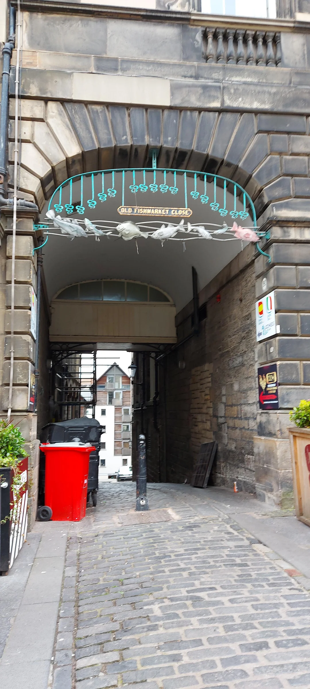
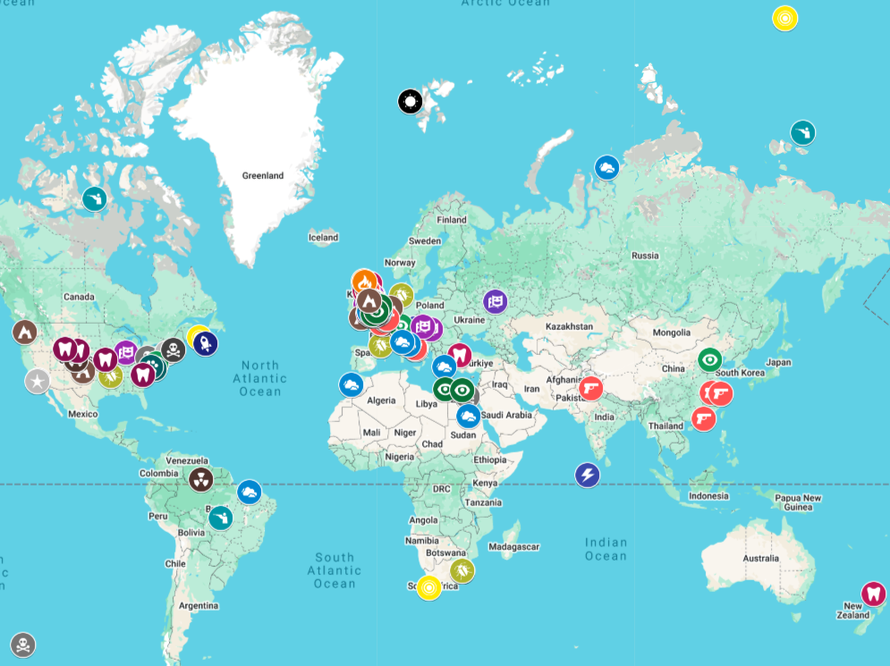

The Magnus Archives (or TMA for short) is one of my favorite pieces of fiction so naturally I want to visit the locations mentioned throughout the series and a decent amount of them are real.

Old Fishmarket Close, Edinburgh, the first location mentioned in TMA to actually exist

Map of TMA locations that are real; interactive version at TMA map with key here
Methods and Plans
Ok, but how will I go about visiting the locations since they are all over the world? Well there are numerous ways to go about it.
Decide what locations, if any, to skip
middle of the ocean i.e. Point Nemo
middle of nowhere with nothing to do i.e. Dikson, Russia
places not open to the public i.e. Caracaraí Ecological Station